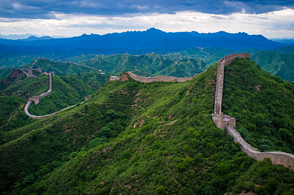
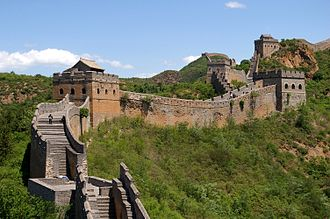
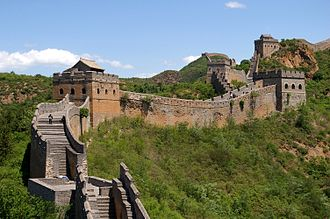
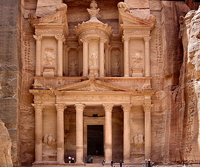
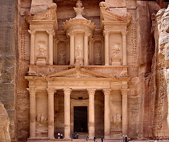
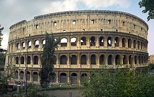
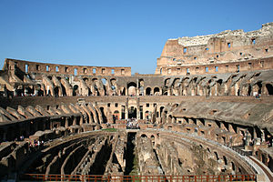

Сім нових чудес світу
Сім нових чудес світу — проект, організований фондом «Нові сім див світу» (NOWC), який намагався об'єднати сім чудес стародавнього світу із списком сучасних чудес з метою збереження культурної спадщини для майбутніх поколінь, аби уникнути повторення ситуації з сімома стародавніми дивами світу. Переможці оголошені 7 липня 2007 року в Лісабоні (Португалія). Голосування проходило за допомогою SMS, телефону або Інтернету.
Список чудес світу:
- Великий китайський мур
- Петра
- Тадж-Махал
- Колізей
- Мачу-Пікчу
- Христос-Спаситель
- Чичен-Іца
Великий китайский мур

 
Великий китайський мур
Вели́кий кита́йський мур (кит. 长城, пін. chángchéng, «довга стіна») — низка кам'яних та земляних укріплень у північній частині Китаю, збудованих з метою захисту північних кордонів Китайської імперії від вторгнень різних кочових племен. Археологічне дослідження 2008 року дійшло висновку, що Великий мур, побудований в епоху династії Мін (1368—1644), з усіма його секціями простягається на 8 851,8 км. Ця довжина складається з 6259 км самого муру, 359,7 км траншей та 2 232,5 км природних захисних бар'єрів, таких як гори та річки Його загальна протяжність згідно з результатами 2012 року становить 21 196,18 кілометрів.

Великий китайський мур
Вели́кий кита́йський мур (кит. 长城, пін. chángchéng, «довга стіна») — низка кам'яних та земляних укріплень у північній частині Китаю, збудованих з метою захисту північних кордонів Китайської імперії від вторгнень різних кочових племен. Археологічне дослідження 2008 року дійшло висновку, що Великий мур, побудований в епоху династії Мін (1368—1644), з усіма його секціями простягається на 8 851,8 км. Ця довжина складається з 6259 км самого муру, 359,7 км траншей та 2 232,5 км природних захисних бар'єрів, таких як гори та річки Його загальна протяжність згідно з результатами 2012 року становить 21 196,18 кілометрів.
петра
 

 Петра
Пе́тра (араб. البتراء, аль-Батра́; дав.-гр. Πέτρα — скеля) — стародавнє місто та найпопулярніша історична пам'ятка Йорданії. В минулому столиця Ідумеї та Набатейського царства, пізніше — важливе місто Римської імперії. В 1985 році Петра була внесена до переліку Світової спадщини ЮНЕСКО, а в 2007 році була обрана одним з Семи нових чудес світу. Місто розташоване на території сучасної Йорданії, на висоті понад 900 метрів над рівнем моря і 660 метрів над навколишньою місцевістю, долиною Арави, у вузькому каньйоні Сік. Прохід в долину — через ущелини, розташовані на півночі і на півдні, тоді як зі сходу і заходу скелі прямовисно обриваються, утворюючи природні стіни до 60 метрів у висоту.
Петра
Пе́тра (араб. البتراء, аль-Батра́; дав.-гр. Πέτρα — скеля) — стародавнє місто та найпопулярніша історична пам'ятка Йорданії. В минулому столиця Ідумеї та Набатейського царства, пізніше — важливе місто Римської імперії. В 1985 році Петра була внесена до переліку Світової спадщини ЮНЕСКО, а в 2007 році була обрана одним з Семи нових чудес світу. Місто розташоване на території сучасної Йорданії, на висоті понад 900 метрів над рівнем моря і 660 метрів над навколишньою місцевістю, долиною Арави, у вузькому каньйоні Сік. Прохід в долину — через ущелини, розташовані на півночі і на півдні, тоді як зі сходу і заходу скелі прямовисно обриваються, утворюючи природні стіни до 60 метрів у висоту.
тедж махал

 Тадж-Махал
Та́дж Маха́л — монумент, розташований за два кілометри від міста Аґра (Індія), на березі річки Джамна. Збудований імператором Шах Джахан Мугалом як мавзолей для своєї перської дружини Мумтаз-Махал (в дівоцтві Арумад Бану Бегум), також відомої як Мутмаз-Ул-Замані, племінниці впливового царедворця при дворі індійського правителя. Будівництво зайняло 22 роки (з 1630 по 1652 рік). Слова Тадж і Махал походять з мови урду. Тадж на урду означає корона або діадема. Махал означає палац, будинок або особняк. За іншою теорією назва Тадж Махал походить від «Тейо Махалая» назви бога Шиви мовою гінді. Висота Тадж Махалу з маківкою досягає 74 м. В його основі лежить квадратна платформа зі сторонами понад 95 м. По кутах мавзолею розташовані чотири мінарети. Стіни викладені полірованим мармуром, зовні в деяких місцях доповнені червоним пісковиком. У вікнах та арках — ажурні решітки. Склепінчасті переходи розписані сурами із Корану арабськими літерами.
Тадж-Махал
Та́дж Маха́л — монумент, розташований за два кілометри від міста Аґра (Індія), на березі річки Джамна. Збудований імператором Шах Джахан Мугалом як мавзолей для своєї перської дружини Мумтаз-Махал (в дівоцтві Арумад Бану Бегум), також відомої як Мутмаз-Ул-Замані, племінниці впливового царедворця при дворі індійського правителя. Будівництво зайняло 22 роки (з 1630 по 1652 рік). Слова Тадж і Махал походять з мови урду. Тадж на урду означає корона або діадема. Махал означає палац, будинок або особняк. За іншою теорією назва Тадж Махал походить від «Тейо Махалая» назви бога Шиви мовою гінді. Висота Тадж Махалу з маківкою досягає 74 м. В його основі лежить квадратна платформа зі сторонами понад 95 м. По кутах мавзолею розташовані чотири мінарети. Стіни викладені полірованим мармуром, зовні в деяких місцях доповнені червоним пісковиком. У вікнах та арках — ажурні решітки. Склепінчасті переходи розписані сурами із Корану арабськими літерами.
колізей


 Колізей
Колізе́й (лат. Сolosseum; італ. Сolosseo) або амфітеа́тр Фла́віїв (лат. Amphitheatrum Flavium; італ. Anfiteatro Flavio ) — амфітеатр, пам'ятка давньоримської архітектури, одна з найграндіозніших та найбільш відомих споруд античного світу. Будівництво амфітеатру було розпочато імператором Веспасіаном і завершено у 80 році н.е. його сином, Титом. Розташований в Римі, в низині між Есквілінським, Палатинським та Целійським пагорбами. На момент завершення будівництва мав найбільшу місткість в світі — від 50 до 80 тис. глядачів. Одразу по завершенні будівництва споруда дістала назву Амфітеатр Флавіїв (лат. Amphitheatrum Flavium) на честь династії Флавіїв, представниками якої були імператори Веспасіан і Тит. Під час правління Веспасіана в 72 році н. е. було розпочату будівництво амфітеатру, а в 80 році воно було завершено його сином та наступним імператором, Титом.
Колізей
Колізе́й (лат. Сolosseum; італ. Сolosseo) або амфітеа́тр Фла́віїв (лат. Amphitheatrum Flavium; італ. Anfiteatro Flavio ) — амфітеатр, пам'ятка давньоримської архітектури, одна з найграндіозніших та найбільш відомих споруд античного світу. Будівництво амфітеатру було розпочато імператором Веспасіаном і завершено у 80 році н.е. його сином, Титом. Розташований в Римі, в низині між Есквілінським, Палатинським та Целійським пагорбами. На момент завершення будівництва мав найбільшу місткість в світі — від 50 до 80 тис. глядачів. Одразу по завершенні будівництва споруда дістала назву Амфітеатр Флавіїв (лат. Amphitheatrum Flavium) на честь династії Флавіїв, представниками якої були імператори Веспасіан і Тит. Під час правління Веспасіана в 72 році н. е. було розпочату будівництво амфітеатру, а в 80 році воно було завершено його сином та наступним імператором, Титом.